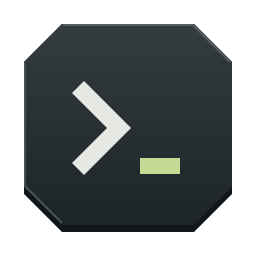
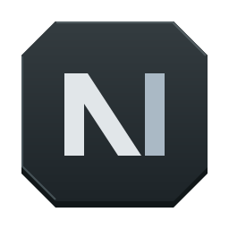
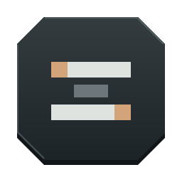
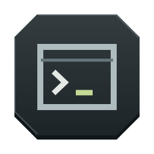
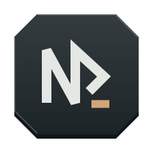

六款极简工业图标 · 石墨机身 / 切角轮廓 / 低饱和信号色点击选中方案，再把编号告诉我；下面的小尺寸就是实际显示大小。

切削斜面与单一提示符。最接近终端本身，克制、清晰。

用斜向留白切出 N，强调 next 的推进感。

两条加工轨道与端点，呼应多 pane 与持久会话。
两枚错位箭片构成抽象 N，整体轮廓更有速度感。

硬件机匣轮廓，内嵌微型终端标记。更像一件工具。

单条连续折线形成 N 与提示箭头，辨识度更强。